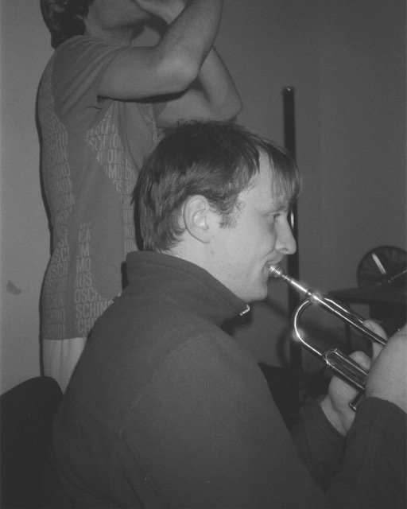

Sebastiaan Distelmans (Bas) is een audiomaker en muzikant gebaseed in Brussel.
In 2026 behaalde hij een master radio aan het RITCS en zijn masterproef De lotgevallen van ene Arno Schaak werd geselecteerd voor uitzending op Zandman (VRT Radio 1).
Tijdens zijn stage werkte hij mee aan de podcast
Alpha
van Wederik De Backer en Lieselot Mariën, uitgegeven door Knack en NTR.
Samen met Wederik maakte hij ook De wachters van het Gelmelslot:
een documentaire podcastreeks over het dagelijks leven in de gevangenis van Hoogstraten.
De lotgevallen van ene Arno Schaak
19/06/2026
masterproef RITCS
audiofictie
Arno Schaak, recent gediplomeerd 'master of cerebral thought', probeert werk te vinden na zijn proclamatie, maar de diefstal van zijn diploma zet een reeks ongelukkige gebeurtenissen in gang. Hij komt in aanvaring met de wet, sluit vriendschap met de koning van de onderwereld en verkent alternatieve loopbaanmogelijkheden.
De lotgevallen van ene Arno Schaak werd op 8 september 2026 uitgezonden op Zandman met Joris Vergeyle (VRT Radio 1).
De wachters van het Gelmelslot
13/06/2026
documentaire
Podcastmaker Wederik De Backer en stagiair Bas Distelmans gingen in gesprek met medewerkers, vrijwilligers en mensen in detentie. Aan de hand van vijf centrale thema’s – de metsersopleiding, de voetbalploeg ‘Gelmelboys’, de kerngroep, de vrouwenafdeling en de boerderij – brengen zij verhalen die uniek zijn aan de gevangenis. Vrijwilligster Lut, die activiteiten organiseert op de vrouwenafdeling, kreeg de eer om de podcast aan elkaar te praten.
De wachters van het Gelmelslot ging in première in de gavangenis van Hoogstraten en is beluisterbaar op Spotify.
Sebastiaan Distelmans
sebastiaan.distelmans@ik.me
Klein Raamstraat 6, 2221 Booischot
BE1044.061.676
